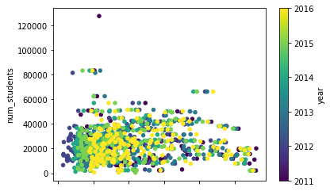
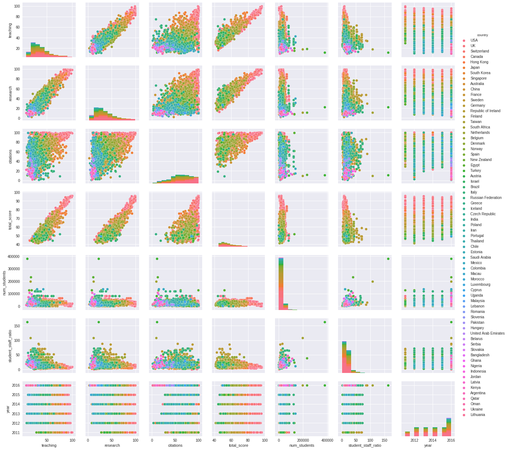
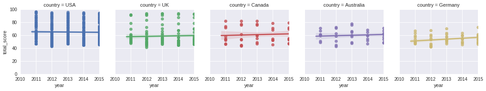

Foreword
Code snippets and excerpts from the tutorial. Python 3. From DataCamp.
Load and Explore the Data¶
The Data¶
The datasets are downloadable from Kaggle.
%pylab inline
import pandas as pd
# Import Times Higher Education World University Rankings data
# https://www.timeshighereducation.com/world-university-rankings
times_df = pd.read_csv('timesData.csv', thousands=",")
# Import Academic Ranking of World Universities data
# http://www.shanghairanking.com/
shanghai_df = pd.read_csv('shanghaiData.csv')
Populating the interactive namespace from numpy and matplotlib
Quickly Inspecting the Data¶
# Return the first rows of `times_df`
times_df.head()
| world_rank | university_name | country | teaching | international | research | citations | income | total_score | num_students | student_staff_ratio | international_students | female_male_ratio | year | |
|---|---|---|---|---|---|---|---|---|---|---|---|---|---|---|
| 0 | 1 | Harvard University | United States of America | 99.7 | 72.4 | 98.7 | 98.8 | 34.5 | 96.1 | 20152.0 | 8.9 | 25% | NaN | 2011 |
| 1 | 2 | California Institute of Technology | United States of America | 97.7 | 54.6 | 98.0 | 99.9 | 83.7 | 96.0 | 2243.0 | 6.9 | 27% | 33 : 67 | 2011 |
| 2 | 3 | Massachusetts Institute of Technology | United States of America | 97.8 | 82.3 | 91.4 | 99.9 | 87.5 | 95.6 | 11074.0 | 9.0 | 33% | 37 : 63 | 2011 |
| 3 | 4 | Stanford University | United States of America | 98.3 | 29.5 | 98.1 | 99.2 | 64.3 | 94.3 | 15596.0 | 7.8 | 22% | 42 : 58 | 2011 |
| 4 | 5 | Princeton University | United States of America | 90.9 | 70.3 | 95.4 | 99.9 | - | 94.2 | 7929.0 | 8.4 | 27% | 45 : 55 | 2011 |
# Describe `times_df`
times_df.describe()
| teaching | research | citations | num_students | student_staff_ratio | year | |
|---|---|---|---|---|---|---|
| count | 2603.000000 | 2603.000000 | 2603.000000 | 2544.000000 | 2544.000000 | 2603.000000 |
| mean | 37.801498 | 35.910257 | 60.921629 | 23873.758648 | 18.445283 | 2014.075682 |
| std | 17.604218 | 21.254805 | 23.073219 | 17675.946877 | 11.458698 | 1.685733 |
| min | 9.900000 | 2.900000 | 1.200000 | 462.000000 | 0.600000 | 2011.000000 |
| 25% | 24.700000 | 19.600000 | 45.500000 | 12637.750000 | 11.975000 | 2013.000000 |
| 50% | 33.900000 | 30.500000 | 62.500000 | 20851.000000 | 16.100000 | 2014.000000 |
| 75% | 46.400000 | 47.250000 | 79.050000 | 29991.000000 | 21.500000 | 2016.000000 |
| max | 99.700000 | 99.400000 | 100.000000 | 379231.000000 | 162.600000 | 2016.000000 |
# Return the first rows of `shanghai_df`
shanghai_df.head()
| world_rank | university_name | national_rank | total_score | alumni | award | hici | ns | pub | pcp | year | |
|---|---|---|---|---|---|---|---|---|---|---|---|
| 0 | 1 | Harvard University | 1 | 100.0 | 100.0 | 100.0 | 100.0 | 100.0 | 100.0 | 72.4 | 2005 |
| 1 | 2 | University of Cambridge | 1 | 73.6 | 99.8 | 93.4 | 53.3 | 56.6 | 70.9 | 66.9 | 2005 |
| 2 | 3 | Stanford University | 2 | 73.4 | 41.1 | 72.2 | 88.5 | 70.9 | 72.3 | 65.0 | 2005 |
| 3 | 4 | University of California, Berkeley | 3 | 72.8 | 71.8 | 76.0 | 69.4 | 73.9 | 72.2 | 52.7 | 2005 |
| 4 | 5 | Massachusetts Institute of Technology (MIT) | 4 | 70.1 | 74.0 | 80.6 | 66.7 | 65.8 | 64.3 | 53.0 | 2005 |
# Describe `shanghai_df`
shanghai_df.describe()
| total_score | alumni | award | hici | ns | pub | pcp | year | |
|---|---|---|---|---|---|---|---|---|
| count | 1101.000000 | 4896.000000 | 4895.00000 | 4895.000000 | 4875.000000 | 4895.000000 | 4895.000000 | 4897.000000 |
| mean | 36.383470 | 9.161724 | 7.69191 | 16.221491 | 16.078503 | 38.254648 | 21.242329 | 2009.658566 |
| std | 13.557186 | 14.140636 | 15.49411 | 14.382710 | 12.511529 | 13.050809 | 9.254351 | 3.197576 |
| min | 23.500000 | 0.000000 | 0.00000 | 0.000000 | 0.000000 | 7.300000 | 8.300000 | 2005.000000 |
| 25% | 27.400000 | 0.000000 | 0.00000 | 7.300000 | 8.000000 | 28.900000 | 15.600000 | 2007.000000 |
| 50% | 31.300000 | 0.000000 | 0.00000 | 12.600000 | 12.800000 | 36.000000 | 19.000000 | 2009.000000 |
| 75% | 41.800000 | 15.600000 | 13.40000 | 21.700000 | 19.800000 | 45.300000 | 24.500000 | 2012.000000 |
| max | 100.000000 | 100.000000 | 100.00000 | 100.000000 | 100.000000 | 100.000000 | 100.000000 | 2015.000000 |
Index and Pull Values¶
[] for row numbers or column names, loc[], iloc[], query.
# Retrieve the total score of the first row
print(times_df.loc[0, 'total_score'])
96.1
# Retrieve rows 0 and 1
print(times_df[0:2])
world_rank university_name country \
0 1 Harvard University United States of America
1 2 California Institute of Technology United States of America
teaching international research citations income total_score \
0 99.7 72.4 98.7 98.8 34.5 96.1
1 97.7 54.6 98.0 99.9 83.7 96.0
num_students student_staff_ratio international_students female_male_ratio \
0 20152.0 8.9 25% NaN
1 2243.0 6.9 27% 33 : 67
year
0 2011
1 2011
# Retrieve the values at columns and rows 1-3
print(times_df.iloc[1:4,1:4])
university_name country teaching
1 California Institute of Technology United States of America 97.7
2 Massachusetts Institute of Technology United States of America 97.8
3 Stanford University United States of America 98.3
# Retrieve the column `total_score`
print(times_df['total_score'])
0 96.1
1 96.0
2 95.6
3 94.3
4 94.2
5 91.2
6 91.2
7 91.1
8 90.6
9 89.5
10 87.7
11 86.9
12 86.4
13 83.9
14 83.4
15 83.4
16 82.0
17 81.0
18 79.5
19 79.3
20 79.2
21 78.4
22 78.0
23 76.5
24 75.9
25 75.6
26 75.3
27 75.1
28 75.0
29 73.8
...
2573 -
2574 -
2575 -
2576 -
2577 -
2578 -
2579 -
2580 -
2581 -
2582 -
2583 -
2584 -
2585 -
2586 -
2587 -
2588 -
2589 -
2590 -
2591 -
2592 -
2593 -
2594 -
2595 -
2596 -
2597 -
2598 -
2599 -
2600 -
2601 -
2602 -
Name: total_score, Length: 2603, dtype: object
# Are the last entries after 2006?
print(shanghai_df.loc[:-10, 'year'] > 2006)
Series([], Name: year, dtype: bool)
# Was the alumni count higher than 90 for the first ten universities?
print(shanghai_df.loc[0:11, 'alumni'] > 90)
0 True
1 True
2 False
3 False
4 False
5 False
6 False
7 False
8 False
9 False
10 False
11 False
Name: alumni, dtype: bool
# Query `shanghai_df` for universities with total score between 40 and 50
average_schools = shanghai_df.query('total_score > 0 and total_score < 50')
# Print the result
print(average_schools)
world_rank university_name \
15 16 University of Wisconsin - Madison
16 17 University of Washington
17 18 University of California, San Francisco
18 19 The Johns Hopkins University
19 20 The University of Tokyo
20 21 University of Michigan - Ann Arbor
21 22 Kyoto University
22 23 The Imperial College of Science, Technology an...
23 24 University of Toronto
24 25 University of Illinois at Urbana-Champaign
25 26 University College London
26 27 Swiss Federal Institute of Technology Zurich
27 28 Washington University in St. Louis
28 29 New York University
29 30 Rockefeller University
30 31 Northwestern University
31 32 Duke University
32 32 University of Minnesota, Twin Cities
33 34 University of California, Santa Barbara
34 35 University of Colorado at Boulder
35 36 The University of Texas at Austin
36 37 University of British Columbia
37 38 The University of Texas Southwestern Medical C...
38 39 Pennsylvania State University - University Park
39 39 Vanderbilt University
40 41 University of California, Davis
41 41 Utrecht University
42 43 Rutgers, The State University of New Jersey - ...
43 43 University of Pittsburgh
44 45 Karolinska Institute
... ... ...
4467 71 Ghent University
4468 72 Ecole Normale Superieure - Paris
4469 73 Aarhus University
4470 73 Boston University
4471 75 Brown University
4472 75 University of Groningen
4473 77 Nagoya University
4474 77 Stockholm University
4475 77 Technion-Israel Institute of Technology
4476 77 The Australian National University
4477 77 The University of Queensland
4478 82 Leiden University
4479 83 University of Florida
4480 84 Rice University
4481 85 Osaka University
4482 86 Moscow State University
4483 87 The University of Western Australia
4484 87 University of Basel
4485 87 University of Strasbourg
4486 90 KU Leuven
4487 90 University of Arizona
4488 92 University of Warwick
4489 93 Arizona State University
4490 93 University of California, Santa Cruz
4491 93 University of Utah
4492 96 McMaster University
4493 97 University of Bonn
4494 98 VU University Amsterdam
4495 99 Michigan State University
4496 100 Texas A&M University
national_rank total_score alumni award hici ns pub pcp year
15 14 49.2 43.0 36.3 52.1 46.3 68.7 29.0 2005
16 15 48.4 28.8 32.4 53.9 47.1 73.8 27.2 2005
17 16 47.8 0.0 37.6 55.6 57.9 58.8 45.2 2005
18 17 46.9 51.4 28.3 41.6 52.2 67.7 24.9 2005
19 1 46.7 36.0 14.4 38.5 52.1 86.5 34.7 2005
20 18 44.9 43.0 0.0 61.9 43.0 76.5 30.9 2005
21 2 43.8 39.7 34.1 34.2 37.0 72.3 31.1 2005
22 3 43.7 20.8 38.1 40.8 38.2 64.6 40.3 2005
23 1 43.1 28.1 19.7 39.3 38.9 76.7 41.9 2005
24 19 42.8 41.6 37.4 44.4 34.1 58.0 26.0 2005
25 4 42.6 30.7 32.9 37.7 41.5 60.5 38.8 2005
26 1 41.7 40.2 37.0 35.1 41.1 43.4 52.4 2005
27 20 40.7 25.1 26.6 38.5 46.5 53.9 39.9 2005
28 21 38.8 33.8 25.0 43.0 35.3 55.4 26.3 2005
29 22 38.2 22.6 59.8 28.3 44.1 24.0 35.9 2005
30 23 37.9 21.7 19.3 44.4 33.8 57.6 36.2 2005
31 24 37.7 20.8 0.0 47.1 45.3 60.8 38.9 2005
32 24 37.7 36.0 0.0 49.7 35.2 68.4 23.8 2005
33 26 36.9 0.0 36.0 42.3 39.0 44.1 35.8 2005
34 27 36.3 16.6 29.8 40.8 36.6 46.3 29.5 2005
35 28 35.5 21.7 17.1 49.1 30.0 54.8 21.7 2005
36 2 35.4 20.8 19.3 32.4 32.5 60.4 33.9 2005
37 29 34.8 24.3 33.9 31.4 38.2 37.9 31.0 2005
38 30 33.4 14.0 0.0 45.8 37.9 59.9 24.0 2005
39 30 33.4 12.5 30.2 34.2 24.5 49.2 35.6 2005
40 32 32.9 0.0 0.0 46.5 34.5 64.0 29.8 2005
41 1 32.9 30.7 21.4 27.2 27.3 55.7 25.9 2005
42 33 32.3 15.4 20.4 36.9 32.9 47.1 24.1 2005
43 33 32.3 25.1 0.0 40.1 25.9 64.3 28.2 2005
44 1 32.1 30.7 27.8 33.3 19.7 47.3 25.1 2005
... ... ... ... ... ... ... ... ... ...
4467 1 27.8 5.1 13.3 26.9 18.3 57.5 34.5 2015
4468 3 27.6 48.9 28.0 6.2 19.5 26.4 60.5 2015
4469 2 27.3 11.5 22.1 12.3 25.8 51.8 31.0 2015
4470 42 27.3 11.5 11.5 29.1 26.3 49.5 21.8 2015
4471 43 27.0 14.5 13.3 26.2 25.1 43.6 32.8 2015
4472 2 27.0 0.0 18.8 23.0 21.0 52.6 32.7 2015
4473 3 26.7 29.0 25.3 16.8 17.7 44.3 23.1 2015
4474 3 26.7 24.1 27.4 18.1 19.4 40.4 25.6 2015
4475 2 26.7 23.5 37.6 15.2 18.3 33.3 28.2 2015
4476 2 26.7 13.6 19.2 24.8 20.1 45.1 29.1 2015
4477 2 26.7 12.6 0.0 22.0 24.0 63.2 29.3 2015
4478 3 26.5 17.8 9.4 25.7 22.0 46.9 32.9 2015
4479 44 26.2 17.0 0.0 30.9 21.0 58.7 17.3 2015
4480 45 26.0 16.2 21.7 28.1 22.8 29.2 34.3 2015
4481 4 25.7 8.9 0.0 31.6 26.7 51.7 21.7 2015
4482 1 25.3 41.4 33.0 0.0 7.7 46.4 31.3 2015
4483 4 24.9 13.6 14.1 24.1 14.5 47.5 28.9 2015
4484 4 24.9 19.2 16.3 17.4 21.4 39.2 35.0 2015
4485 4 24.9 25.1 28.8 15.9 19.0 34.6 21.7 2015
4486 2 24.7 0.0 0.0 30.1 18.6 56.6 30.4 2015
4487 46 24.7 14.5 0.0 27.2 27.5 48.4 20.3 2015
4488 9 24.6 0.0 29.8 23.7 14.0 39.3 26.8 2015
4489 47 24.5 0.0 20.0 22.2 25.5 42.6 19.1 2015
4490 47 24.5 0.0 0.0 37.9 33.9 29.0 37.6 2015
4491 47 24.5 0.0 11.5 26.5 25.5 46.7 18.7 2015
4492 4 24.4 12.6 18.8 23.2 15.1 44.5 22.5 2015
4493 4 24.3 15.4 19.8 17.4 21.1 39.8 25.9 2015
4494 4 24.2 0.0 0.0 27.8 18.0 55.5 33.3 2015
4495 50 24.0 8.9 0.0 30.7 21.8 50.6 18.9 2015
4496 51 23.9 0.0 0.0 34.3 22.7 49.5 20.9 2015
[948 rows x 11 columns]
shanghai_df.query("national_rank == 1 and world_rank == 1")
| world_rank | university_name | national_rank | total_score | alumni | award | hici | ns | pub | pcp | year |
|---|
shanghai_df.query("alumni < 20")
| world_rank | university_name | national_rank | total_score | alumni | award | hici | ns | pub | pcp | year | |
|---|---|---|---|---|---|---|---|---|---|---|---|
| 12 | 13 | University of California, San Diego | 11 | 51.0 | 17.7 | 34.7 | 59.8 | 56.5 | 64.5 | 46.6 | 2005 |
| 17 | 18 | University of California, San Francisco | 16 | 47.8 | 0.0 | 37.6 | 55.6 | 57.9 | 58.8 | 45.2 | 2005 |
| 33 | 34 | University of California, Santa Barbara | 26 | 36.9 | 0.0 | 36.0 | 42.3 | 39.0 | 44.1 | 35.8 | 2005 |
| 34 | 35 | University of Colorado at Boulder | 27 | 36.3 | 16.6 | 29.8 | 40.8 | 36.6 | 46.3 | 29.5 | 2005 |
| 38 | 39 | Pennsylvania State University - University Park | 30 | 33.4 | 14.0 | 0.0 | 45.8 | 37.9 | 59.9 | 24.0 | 2005 |
| 39 | 39 | Vanderbilt University | 30 | 33.4 | 12.5 | 30.2 | 34.2 | 24.5 | 49.2 | 35.6 | 2005 |
| 40 | 41 | University of California, Davis | 32 | 32.9 | 0.0 | 0.0 | 46.5 | 34.5 | 64.0 | 29.8 | 2005 |
| 42 | 43 | Rutgers, The State University of New Jersey - ... | 33 | 32.3 | 15.4 | 20.4 | 36.9 | 32.9 | 47.1 | 24.1 | 2005 |
| 47 | 47 | University of California, Irvine | 35 | 31.8 | 0.0 | 30.0 | 32.4 | 28.5 | 48.2 | 31.1 | 2005 |
| 49 | 50 | University of Southern California | 37 | 31.7 | 0.0 | 27.3 | 37.7 | 23.6 | 52.8 | 25.8 | 2005 |
| 54 | 55 | University of North Carolina at Chapel Hill | 39 | 30.3 | 12.5 | 0.0 | 35.1 | 32.8 | 59.5 | 27.3 | 2005 |
| 55 | 56 | The Australian National University | 1 | 30.2 | 17.7 | 12.9 | 36.9 | 29.0 | 45.1 | 27.8 | 2005 |
| 57 | 57 | University of Florida | 40 | 30.0 | 15.4 | 0.0 | 35.1 | 25.0 | 65.2 | 25.8 | 2005 |
| 58 | 57 | University of Zurich | 2 | 30.0 | 12.5 | 27.3 | 19.2 | 30.3 | 47.2 | 30.6 | 2005 |
| 61 | 62 | Osaka University | 3 | 29.3 | 12.5 | 0.0 | 23.6 | 31.1 | 66.8 | 29.2 | 2005 |
| 62 | 63 | The Ohio State University - Columbus | 41 | 29.2 | 17.7 | 0.0 | 40.8 | 21.5 | 61.2 | 19.5 | 2005 |
| 63 | 64 | University of Bristol | 7 | 28.8 | 10.9 | 18.2 | 30.4 | 24.5 | 47.5 | 27.4 | 2005 |
| 70 | 71 | University of Heidelberg | 3 | 28.0 | 10.9 | 27.7 | 20.8 | 20.9 | 48.1 | 26.9 | 2005 |
| 72 | 73 | Tohoku University | 4 | 27.8 | 18.8 | 0.0 | 19.2 | 26.9 | 65.3 | 29.0 | 2005 |
| 73 | 73 | University of Arizona | 44 | 27.8 | 0.0 | 0.0 | 29.4 | 36.8 | 55.8 | 25.7 | 2005 |
| 74 | 75 | Purdue University - West Lafayette | 45 | 27.7 | 18.8 | 17.1 | 27.2 | 21.4 | 49.8 | 19.4 | 2005 |
| 75 | 76 | University of Helsinki | 1 | 27.4 | 18.8 | 18.2 | 15.7 | 21.4 | 54.5 | 27.5 | 2005 |
| 76 | 77 | Michigan State University | 46 | 26.9 | 12.5 | 0.0 | 37.7 | 26.6 | 51.0 | 18.7 | 2005 |
| 79 | 80 | Boston University | 48 | 26.1 | 15.4 | 0.0 | 31.4 | 28.1 | 50.8 | 17.5 | 2005 |
| 80 | 80 | King's College London | 9 | 26.1 | 16.6 | 23.5 | 20.8 | 17.4 | 44.6 | 24.8 | 2005 |
| 81 | 82 | University of Melbourne | 2 | 26.0 | 15.4 | 14.4 | 22.2 | 18.7 | 53.5 | 19.9 | 2005 |
| 82 | 83 | University of Nottingham | 10 | 25.9 | 15.4 | 20.4 | 20.8 | 19.0 | 45.6 | 24.8 | 2005 |
| 85 | 86 | Brown University | 49 | 25.4 | 0.0 | 13.9 | 29.4 | 25.5 | 40.7 | 27.9 | 2005 |
| 86 | 87 | Indiana University Bloomington | 50 | 25.2 | 14.0 | 18.2 | 24.8 | 21.2 | 42.0 | 18.2 | 2005 |
| 88 | 89 | Texas A&M University - College Station | 51 | 25.1 | 0.0 | 0.0 | 32.4 | 24.4 | 55.0 | 20.4 | 2005 |
| ... | ... | ... | ... | ... | ... | ... | ... | ... | ... | ... | ... |
| 4867 | 401-500 | University of Jena | 29-39 | NaN | 0.0 | 0.0 | 0.0 | 9.3 | 34.0 | 17.1 | 2015 |
| 4868 | 401-500 | University of Jyvaskyla | 4-6 | NaN | 0.0 | 0.0 | 3.6 | 10.3 | 26.7 | 14.1 | 2015 |
| 4869 | 401-500 | University of Konstanz | 29-39 | NaN | 0.0 | 0.0 | 12.1 | 11.4 | 22.2 | 13.5 | 2015 |
| 4870 | 401-500 | University of KwaZulu-Natal | 3-4 | NaN | 0.0 | 0.0 | 3.6 | 8.4 | 32.8 | 16.6 | 2015 |
| 4871 | 401-500 | University of Ljubljana | 1 | NaN | 0.0 | 0.0 | 0.0 | 7.7 | 35.1 | 14.2 | 2015 |
| 4872 | 401-500 | University of Maryland, Baltimore County | 126-146 | NaN | 0.0 | 0.0 | 17.4 | 6.5 | 17.8 | 17.3 | 2015 |
| 4873 | 401-500 | University of Milan - Bicocca | 11-20 | NaN | 0.0 | 0.0 | 5.0 | 5.6 | 30.9 | 21.4 | 2015 |
| 4874 | 401-500 | University of Nice Sophia Antipolis | 19-22 | NaN | 0.0 | 0.0 | 3.6 | 16.3 | 26.2 | 12.7 | 2015 |
| 4875 | 401-500 | University of Oklahoma - Norman | 126-146 | NaN | 0.0 | 0.0 | 5.1 | 10.0 | 28.0 | 14.0 | 2015 |
| 4876 | 401-500 | University of Palermo | 11-20 | NaN | 0.0 | 0.0 | 6.3 | 6.6 | 28.2 | 14.8 | 2015 |
| 4877 | 401-500 | University of Parma | 11-20 | NaN | 0.0 | 0.0 | 13.6 | 2.1 | 26.7 | 19.6 | 2015 |
| 4878 | 401-500 | University of Pavia | 11-20 | NaN | 0.0 | 0.0 | 5.0 | 5.7 | 30.7 | 19.7 | 2015 |
| 4879 | 401-500 | University of Perugia | 11-20 | NaN | 0.0 | 0.0 | 3.6 | 7.5 | 29.3 | 18.5 | 2015 |
| 4880 | 401-500 | University of Quebec | 19-20 | NaN | 0.0 | 0.0 | 0.0 | 9.8 | 33.3 | 16.8 | 2015 |
| 4881 | 401-500 | University of Regensburg | 29-39 | NaN | 0.0 | 0.0 | 3.6 | 13.9 | 27.7 | 15.2 | 2015 |
| 4882 | 401-500 | University of Rennes 1 | 19-22 | NaN | 0.0 | 0.0 | 3.6 | 9.2 | 28.1 | 11.2 | 2015 |
| 4883 | 401-500 | University of Rhode Island | 126-146 | NaN | 0.0 | 0.0 | 15.2 | 6.1 | 21.1 | 16.0 | 2015 |
| 4884 | 401-500 | University of Roma - Tor Vergata | 11-20 | NaN | 0.0 | 0.0 | 0.0 | 8.8 | 33.7 | 19.2 | 2015 |
| 4885 | 401-500 | University of Rostock | 29-39 | NaN | 0.0 | 0.0 | 8.6 | 8.4 | 25.0 | 13.5 | 2015 |
| 4886 | 401-500 | University of Santiago Compostela | 9-13 | NaN | 0.0 | 0.0 | 7.1 | 6.1 | 31.1 | 13.2 | 2015 |
| 4887 | 401-500 | University of Science, Malaysia | 2 | NaN | 0.0 | 0.0 | 7.1 | 3.3 | 30.6 | 15.7 | 2015 |
| 4888 | 401-500 | University of Seville | 9-13 | NaN | 0.0 | 0.0 | 0.0 | 7.5 | 33.7 | 11.3 | 2015 |
| 4889 | 401-500 | University of Surrey | 34-37 | NaN | 0.0 | 0.0 | 8.6 | 4.9 | 27.0 | 18.0 | 2015 |
| 4890 | 401-500 | University of Szeged | 1-2 | NaN | 0.0 | 13.3 | 3.6 | 3.4 | 21.8 | 12.8 | 2015 |
| 4891 | 401-500 | University of the Basque Country | 9-13 | NaN | 0.0 | 0.0 | 3.6 | 7.1 | 36.1 | 13.5 | 2015 |
| 4892 | 401-500 | University of Trieste | 11-20 | NaN | 0.0 | 0.0 | 5.0 | 10.9 | 25.1 | 20.1 | 2015 |
| 4893 | 401-500 | University of Zaragoza | 9-13 | NaN | 0.0 | 0.0 | 7.6 | 5.1 | 33.3 | 13.1 | 2015 |
| 4894 | 401-500 | Utah State University | 126-146 | NaN | 13.6 | 0.0 | 3.6 | 10.8 | 25.1 | 15.5 | 2015 |
| 4895 | 401-500 | Vienna University of Technology | 4-6 | NaN | 0.0 | 0.0 | 0.0 | 12.2 | 28.8 | 22.9 | 2015 |
| 4896 | 401-500 | Wake Forest University | 126-146 | NaN | 0.0 | 0.0 | 14.9 | 7.5 | 25.0 | 11.9 | 2015 |
4122 rows × 11 columns
Method Chaining¶
pipe() to chain operations and thus eliminate the need for intermediate DataFrames.
Without this operator, instead of writing df.pipe(f).pipe(g).pipe(h) write: h(g(f(df))). This becomes harder to follow once the number of nested functions grows large.
# Extract info
def extract_info(input_df, name):
df = input_df.copy()
info_df = pd.DataFrame({'nb_rows': df.shape[0], 'nb_cols': df.shape[1], 'name': name}, index=range(1))
return info_df
# Gather all info
all_info = pd.concat([times_df.pipe(extract_info, 'times'), shanghai_df.pipe(extract_info, 'shanghai')])
print(all_info)
name nb_cols nb_rows
0 times 14 2603
0 shanghai 11 4897
Select the common columns.
common_columns = set(shanghai_df.columns) & set(times_df.columns)
# Return `common_columns`
print(common_columns)
{'year', 'university_name', 'total_score', 'world_rank'}
Clean the Data¶
# Clean up the `world_rank`
def clean_world_rank(input_df):
df = input_df.copy()
df.world_rank = df.world_rank.str.split('-').str[0].str.split('=').str[0]
return df
# Assign the common years of `shanghai_df` and `times_df` to `common_years`
common_years = set(shanghai_df.year) & set(times_df.year)
# Print `common_years`
print(common_years)
{2011, 2012, 2013, 2014, 2015}
# Filter years
def filter_year(input_df, years):
df = input_df.copy()
return df.query('year in {}'.format(list(years)))
# Clean `times_df` and `shanghai_df`
cleaned_times_df = (times_df.loc[:, common_columns]
.pipe(filter_year, common_years)
.pipe(clean_world_rank)
.assign(name='times'))
cleaned_shanghai_df = (shanghai_df.loc[:, common_columns]
.pipe(filter_year, common_years)
.pipe(clean_world_rank)
.assign(name='shanghai'))
Concatenate into a single DataFrame¶
38% of data missing from the total_score column: drop this column with the .drop method.
# Compose `ranking_df` with `cleaned_times_df` and `cleaned_shanghai_df`
ranking_df = pd.concat([cleaned_times_df, cleaned_shanghai_df])
# Calculate the percentage of missing data
missing_data = 100 * pd.isnull(ranking_df.total_score).sum() / len(ranking_df)
# Drop the `total_score` column of `ranking_df`
ranking_df = ranking_df.drop('total_score', axis=1)
Memory Optimization¶
Memory can start to play a big part in how fast the pipelines can run. Without the “deep” flag turned on, Pandas won’t estimate memory consumption for the object dtype: category when dealing with categorical data, etc. int64 or even int16 takes less memory.
# Print the memory usage of `ranking_df`
ranking_df.info()
<class 'pandas.core.frame.DataFrame'>
Int64Index: 3686 entries, 0 to 4896
Data columns (total 4 columns):
year 3686 non-null int64
world_rank 3686 non-null object
university_name 3685 non-null object
name 3686 non-null object
dtypes: int64(1), object(3)
memory usage: 144.0+ KB
# Print the deep memory usage of `ranking_df`
ranking_df.info(memory_usage="deep")
<class 'pandas.core.frame.DataFrame'>
Int64Index: 3686 entries, 0 to 4896
Data columns (total 4 columns):
year 3686 non-null int64
world_rank 3686 non-null object
university_name 3685 non-null object
name 3686 non-null object
dtypes: int64(1), object(3)
memory usage: 803.1 KB
Cast Object Types¶
…to more appropriate ones.
def memory_change(input_df, column, dtype):
df = input_df.copy()
old = round(df[column].memory_usage(deep=True) / 1024, 2) # In KB
new = round(df[column].astype(dtype).memory_usage(deep=True) / 1024, 2)# In KB
change = round(100 * (old - new) / (old), 2)
report = ("The inital memory footprint for {column} is: {old}KB.\n"
"The casted {column} now takes: {new}KB.\n"
"A change of {change} %.").format(**locals())
return report
# parameters:
# input_df, column, dtype
print(memory_change(ranking_df,'world_rank', 'int16'))
The inital memory footprint for world_rank is: 244.43KB.
The casted world_rank now takes: 36.0KB.
A change of 85.27 %.
print(memory_change(ranking_df,'university_name', 'category'))
The inital memory footprint for university_name is: 329.98KB.
The casted university_name now takes: 121.37KB.
A change of 63.22 %.
print(memory_change(ranking_df,'name', 'category'))
The inital memory footprint for name is: 257.49KB.
The casted name now takes: 32.6KB.
A change of 87.34 %.
# Cast `world_rank` as type `int16`
ranking_df.world_rank = ranking_df.world_rank.astype('int16')
# Cast `unversity_name` as type `category`
ranking_df.university_name = ranking_df.university_name.astype('category')
# Cast `name` as type `category`
ranking_df.name = ranking_df.name.astype('category')
# Double check the memory usage after type casting
ranking_df.info(memory_usage='deep')
<class 'pandas.core.frame.DataFrame'>
Int64Index: 3686 entries, 0 to 4896
Data columns (total 4 columns):
year 3686 non-null int64
university_name 3685 non-null category
world_rank 3686 non-null int16
name 3686 non-null category
dtypes: category(2), int16(1), int64(1)
memory usage: 161.2 KB
From 803.1 KB!
We have a well-formed data set (i.e. it is in a tidy state) with an optimized memory footprint, data analysis can start.
Replace, Rank, Subset, Groupby¶
Replace¶
‘Massachusetts Institute of Technology (MIT)’ and ‘Massachusetts Institute of Technology’ are two different records of the same university. Thus, change the first name to the latter.
# Query for the rows with university name 'Massachusetts Institute of Technology (MIT)'
print(ranking_df.query("university_name == 'Massachusetts Institute of Technology (MIT)'"))
year university_name world_rank name
3016 2011 Massachusetts Institute of Technology (MIT) 3 shanghai
3516 2012 Massachusetts Institute of Technology (MIT) 3 shanghai
3801 2013 Massachusetts Institute of Technology (MIT) 4 shanghai
3899 2014 Massachusetts Institute of Technology (MIT) 3 shanghai
4399 2015 Massachusetts Institute of Technology (MIT) 3 shanghai
ranking_df.loc[ranking_df.university_name == 'Massachusetts Institute of Technology (MIT)', 'university_name'] = 'Massachusetts Institute of Technology'
ranking_df.university_name.head()
0 Harvard University
1 California Institute of Technology
2 Massachusetts Institute of Technology
3 Stanford University
4 Princeton University
Name: university_name, dtype: category
Categories (785, object): [Aalborg University, Aalto University, Aarhus University, Aberystwyth University, ..., École Normale Supérieure, École Normale Supérieure de Lyon, École Polytechnique, École Polytechnique Fédérale de Lausanne]
Rank, Subset, Groupby¶
To find the 5 (more generally n) top universities over the years, for each ranking system, here is how to do it in pseudo-code:
- For each year (in the
yearcolumn) and for each ranking system (in thenamecolumn):- Select the subset of the data for this given year and the given ranking system.
- Select the 5 top universities and store them in a list.
- Store the result in a dictionary with (year, name) as key and the list of the universities (in descending order) as the value.
# Load in `itertools`
import itertools
# Initialize `ranking`
ranking = {}
for year, name in itertools.product(common_years, ["times", "shanghai"]):
s = (ranking_df.loc[lambda df: ((df.year == year) & (df.name == name)
& (df.world_rank.isin(range(1,6)))), :]
.sort_values('world_rank', ascending=False)
.university_name)
ranking[(year, name)] = list(s)
# Print `ranking`
print(ranking)
{(2011, 'times'): ['Princeton University', 'Stanford University', 'Massachusetts Institute of Technology', 'California Institute of Technology', 'Harvard University'], (2011, 'shanghai'): ['University of Cambridge', 'University of California, Berkeley', 'Massachusetts Institute of Technology', 'Stanford University', 'Harvard University'], (2012, 'times'): ['Princeton University', 'University of Oxford', 'Harvard University', 'Stanford University', 'California Institute of Technology'], (2012, 'shanghai'): ['University of Cambridge', 'University of California, Berkeley', 'Massachusetts Institute of Technology', 'Stanford University', 'Harvard University'], (2013, 'times'): ['Massachusetts Institute of Technology', 'Harvard University', 'Stanford University', 'University of Oxford', 'California Institute of Technology'], (2013, 'shanghai'): ['University of Cambridge', 'Massachusetts Institute of Technology', 'University of California, Berkeley', 'Stanford University', 'Harvard University'], (2014, 'times'): ['Massachusetts Institute of Technology', 'Stanford University', 'Harvard University', 'University of Oxford', 'California Institute of Technology'], (2014, 'shanghai'): ['University of Cambridge', 'University of California-Berkeley', 'Massachusetts Institute of Technology', 'Stanford University', 'Harvard University'], (2015, 'times'): ['University of Cambridge', 'Stanford University', 'University of Oxford', 'Harvard University', 'California Institute of Technology'], (2015, 'shanghai'): ['University of Cambridge', 'University of California, Berkeley', 'Massachusetts Institute of Technology', 'Stanford University', 'Harvard University']}
We have this ranking dictionary, let’s find out how much (in percentage) both ranking methods differ over the years: the two are 100% set-similar if the selected 5-top universities are the same even though they aren’t ranked the same.
# Import `defaultdict`
from collections import defaultdict
# Initialize `compare`
compare = defaultdict(list)
# Initialize `exact_similarity` and `set_similarity`
exact_similarity = {}
set_similarity = {}
for (year, method), universities in ranking.items():
compare[year].append(universities)
for year, ranks in compare.items():
set_similarity[year] = 100 * len(set(ranks[0]) & set(ranks[1])) / 5.0
# Print `set_similarity`
print(set_similarity)
{2011: 60.0, 2012: 40.0, 2013: 60.0, 2014: 60.0, 2015: 60.0}
Is there a better, more idiomatic Pandas way?
# Construct a DataFrame with the top 5 universities
top_5_df = ranking_df.loc[lambda df: df.world_rank.isin(range(1, 6)), :]
# Print the first rows of `top_5_df`
top_5_df.head()
| year | university_name | world_rank | name | |
|---|---|---|---|---|
| 0 | 2011 | Harvard University | 1 | times |
| 1 | 2011 | California Institute of Technology | 2 | times |
| 2 | 2011 | Massachusetts Institute of Technology | 3 | times |
| 3 | 2011 | Stanford University | 4 | times |
| 4 | 2011 | Princeton University | 5 | times |
top_5_df.tail()
| year | university_name | world_rank | name | |
|---|---|---|---|---|
| 4397 | 2015 | Harvard University | 1 | shanghai |
| 4398 | 2015 | Stanford University | 2 | shanghai |
| 4399 | 2015 | Massachusetts Institute of Technology | 3 | shanghai |
| 4400 | 2015 | University of California, Berkeley | 4 | shanghai |
| 4401 | 2015 | University of Cambridge | 5 | shanghai |
# Compute the similarity
def compute_set_similarity(s):
pivoted = s.pivot(values='world_rank', columns='name', index='university_name').dropna()
set_simlarity = 100 * len((set(pivoted['shanghai'].index) & set(pivoted['times'].index))) / 5
return set_simlarity
# Group `top_5_df` by `year`
grouped_df = top_5_df.groupby('year')
# Use `compute_set_similarity` to construct a DataFrame
setsimilarity_df = pd.DataFrame({'set_similarity': grouped_df.apply(compute_set_similarity)}).reset_index()
# Print the first rows of `setsimilarity_df`
setsimilarity_df.head()
| year | set_similarity | |
|---|---|---|
| 0 | 2011 | 60.0 |
| 1 | 2012 | 40.0 |
| 2 | 2013 | 60.0 |
| 3 | 2014 | 60.0 |
| 4 | 2015 | 60.0 |
Visualization¶
Matplotlib¶
import matplotlib.pyplot as plt
# Plot a scatterplot with `total_score` and `alumni`
shanghai_df.plot.scatter('total_score', 'alumni', c='year', colormap='viridis')
plt.show()

Remove values¶
There are some 0 values for the alumni column (0, -, NaN, etc.). Remove them.
# Replace `-` entries with NaN values
times_df['total_score'] = times_df['total_score'].replace("-", "NaN").astype('float')
# Drop all rows with NaN values for `num_students`
times_df = times_df.dropna(subset=['num_students'], how='all')
# Cast the remaining rows with `num_students` as int
times_df['num_students'] = times_df['num_students'].astype('int')
# Plot a scatterplot with `total_score` and `num_students`
times_df.plot.scatter('total_score', 'num_students', c='year', colormap='viridis')
plt.show()

Seaborn¶
The Seaborn plotting tool is mainly used to create statistical plots that are visually appealing.
import seaborn as sns
# Set the Seaborn theme if desired
sns.set_style('darkgrid')
# Abbreviate country names of United States and United Kingdom
times_df['country'] = times_df['country'].replace("United States of America", "USA").replace("United Kingdom", "UK")
# Count the frequency of countries
count = times_df['country'].value_counts()[:10]
# Convert the top 10 countries to a DataFrame
df = count.to_frame()
# Reset the index
#df.reset_index(level=0, inplace=True)
# or...
df['index1'] = df.index
df
| country | index1 | |
|---|---|---|
| USA | 625 | USA |
| UK | 286 | UK |
| Germany | 150 | Germany |
| Australia | 117 | Australia |
| Canada | 108 | Canada |
| Japan | 98 | Japan |
| Italy | 94 | Italy |
| China | 82 | China |
| Netherlands | 75 | Netherlands |
| France | 73 | France |
# Rename the columns
df.columns = ['count', 'country',]
# Plot a barplot with `country` and `count`
sns.barplot(x='country', y='count', data=df)
sns.despine()
plt.show()

Filter rows¶
times_df_filtered = times_df.loc[times_df['country'].isin(['USA', 'UK', 'Canada', 'Australia', 'Germany'])]
# Barplot with `country` and `total_score`
sns.barplot(x='country', y='total_score', data=times_df_filtered)
sns.despine()
plt.show()

Correlation¶
import numpy as np
np.seterr(invalid='ignore')
{'divide': 'warn', 'invalid': 'warn', 'over': 'warn', 'under': 'ignore'}
sns.pairplot(times_df, hue='country')
plt.show()

g = sns.FacetGrid(times_df_filtered, col='country', hue='country')
g.map(sns.regplot, 'year', 'total_score').set(xlim=(2010, 2015), ylim=(0,100))
g.fig.subplots_adjust(wspace=.2)

sns.set(style="white")
# Compute the correlation matrix
corr = times_df.corr()
# Generate a mask for the upper triangle
mask = np.zeros_like(corr, dtype=np.bool)
mask[np.triu_indices_from(mask)] = True
# Set up the matplotlib figure
f, ax = plt.subplots(figsize=(11, 9))
# Generate a custom diverging colormap
cmap = sns.diverging_palette(220, 10, as_cmap=True)
# Draw the heatmap with the mask and correct aspect ratio
sns.heatmap(corr, mask=mask, cmap=cmap, vmax=.3,
square=True, linewidths=.5, ax=ax)
plt.show()

To go beyond¶
with Group-by.